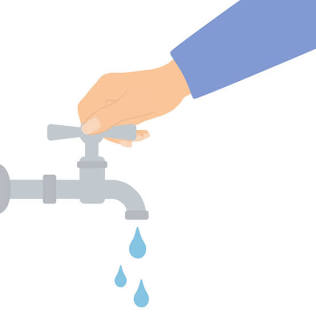
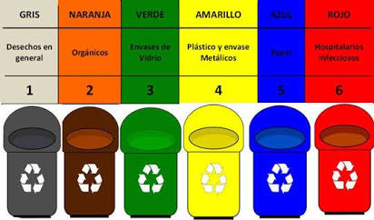

1-Ahorra el agua
Cerrar la canilla mientras te cepillas los dientes o mientras lavas, usarla en el momento indicado

Cuidemos el ambiente. Una accion puede generar grandes cambios.
Cerrar la canilla mientras te cepillas los dientes o mientras lavas, usarla en el momento indicado

Tira la basura entre reciclables y no reciclables en los tachos indicados.
